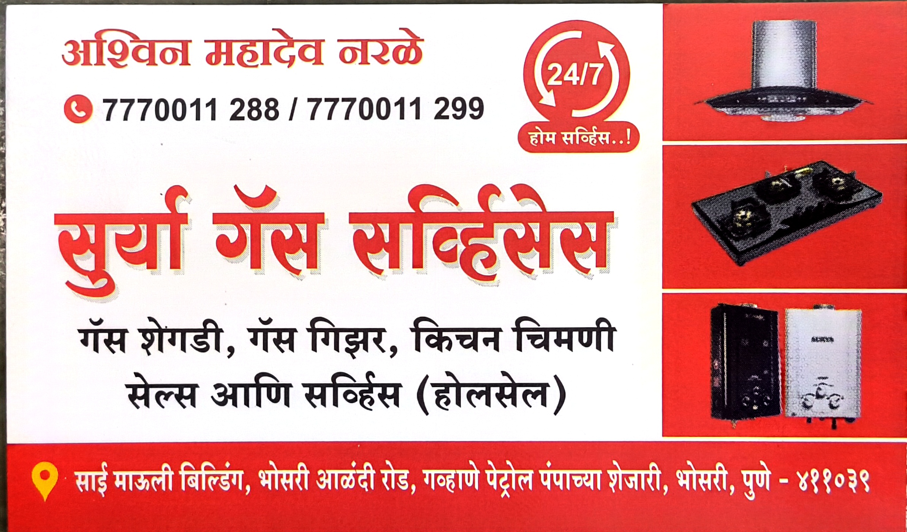

About Us
Surya Gas Services provides trusted gas repairing and gas stove service in Bhosari, Pune, Maharashtra. If people search for gas services, Surya Gas, gas repairing, or gas services near me, this page is designed to help them find Surya Gas Services easily.
सुर्या गॅस सर्व्हिसेस, भोसरी, पुणे येथे विश्वासार्ह गॅस दुरुस्ती, गॅस स्टोव्ह सर्व्हिस, बर्नर क्लिनिंग आणि इतर गॅस सेवा पुरविते.
Our Services
- Gas stove and Kitchen Chimney Sales
- Gas stove repairing | गॅस स्टोव्ह दुरुस्ती
- Burner cleaning and servicing | बर्नर क्लिनिंग आणि सर्व्हिसिंग
- Gas leakage checking | गॅस लिकेज तपासणी
- Regulator checking | रेग्युलेटर तपासणी
- General gas appliance service
Location
Surya Gas Services
D R Gawhane Petrol Pump, Sai Mauli Bldg,
Bhosari Alandi Rd, beside Krushna Medical,
Durgamata Colony, Bhosari, Pune,
Pimpri-Chinchwad, Maharashtra 411039
Contact
Call NowOur Shop & Visiting Card
Customers can view our visiting card and shop-related images here. This helps people identify Surya Gas Services more easily.
